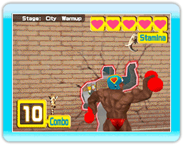
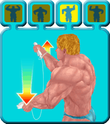
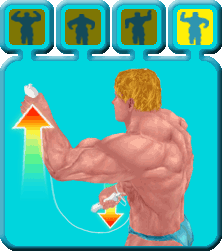
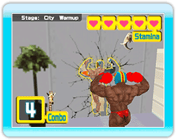
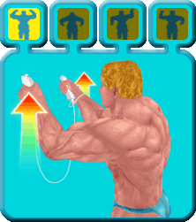
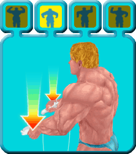
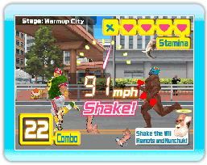

10 |
Règles du Jeu (1) |
 |

Le but du jeu est de courir après et d'attraper les voleurs qui ont dérobé vos protéines.

 

  Si vous parvenez à faire les poses adéquates, la distance avec le voleur que vous poursuivez se réduira. Quand vous approchez de la "Dash Zone"(distance à laquelle le voleur se trouve à votre portée),

|
 le mot "Shake" sera affiché. À partir de ce moment, agitez la télécommande Wii et le Nunchuk pour augmenter votre vitesse de course et attraper les voleurs.
le mot "Shake" sera affiché. À partir de ce moment, agitez la télécommande Wii et le Nunchuk pour augmenter votre vitesse de course et attraper les voleurs. |
 |
 |